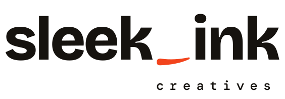
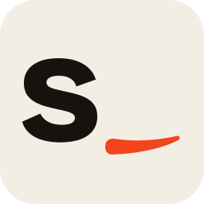

sleek_ink creatives / identity system
Brand guidelines
01 / idea
Two words and the space between them.
sleek is the discipline: clean, considered, nothing wasted. ink is the expression: the hand, the mark, the nerve to put something down.
The underscore joins them. In writing it marks the place where something is about to be written. In code it is how two words become one name. We draw ours by hand, as a single stroke of fresh ink, and it runs through everything we make.
Our work should make people feel able, never managed. Open layouts, direct language, obvious next steps.
Big type, one bold colour and a hand-drawn stroke. We are allowed a point of view.
If it needs explaining, it is not finished. Clarity comes before decoration, every time.
02 / logo
One logo, three forms.
Use the full lockup wherever there is room. Use the wordmark when "creatives" would be too small to read. Use the mark for small squares: app icons, profile pictures and favicons.




Clear space
Keep a margin around the logo equal to the height of the letter "s". Nothing else enters that space: no text, no edges, no other logos.
Smallest sizes
| form | on screen | in print |
|---|---|---|
| Lockup | 120 px wide | 30 mm wide |
| Wordmark | 80 px wide | 20 mm wide |
| Mark | 16 px | 6 mm |
One-colour versions
When only one colour is available, such as a stamp, an engraving or a fax, the stroke takes the colour of the letters.

Please don't
03 / name
How to write our name.
Always lowercase, always with the underscore, even at the start of a sentence.
| write | when |
|---|---|
| sleek_ink creatives | The first time we are mentioned, and on anything formal: contracts, invoices, quotations. |
| sleek_ink | Every mention after the first, and in conversation. |
| never | why |
|---|---|
| Sleek Ink, SleekInk, Sleek_Ink | The underscore and the lowercase are the name. |
| SLEEK_INK CREATIVES | We don't shout. |
| sleek-ink, sleek.ink | Only where a system forbids underscores, such as some web addresses. |
04 / colour
Paper, ink, and one loud red.
The palette is a sheet of warm paper, the black of real ink, and a single red we call fresh ink. Red is the accent; it is strongest when there is very little of it.
- hex
- #F3EEE3
- rgb
- 243 238 227
- cmyk
- 0 2 7 5
- hex
- #16130F
- rgb
- 22 19 15
- cmyk
- 0 14 32 91
- hex
- #F2441D
- rgb
- 242 68 29
- cmyk
- 0 72 88 5
- hex
- #E6DFD0
- rgb
- 230 223 208
- cmyk
- 0 3 10 10
- hex
- #FBF8F2
- rgb
- 251 248 242
- cmyk
- 0 1 4 2
- hex
- #655E54
- rgb
- 101 94 84
- cmyk
- 0 7 17 60
CMYK values are approximate conversions. Ask your printer for a proof before a large run.
How much of each
Combinations that are easy to read
| pairing | contrast | use for |
|---|---|---|
| Ink on paper | 16.0 : 1 | All text |
| Paper on ink | 16.0 : 1 | All text |
| Ink on fresh ink | 5.0 : 1 | All text |
| Graphite on paper | 5.5 : 1 | Secondary text |
| Fresh ink on paper | 3.2 : 1 | Large headlines and graphics only, never body text |
Never set paper-coloured text on fresh ink red. It fails for readers with low vision.
05 / type
Three typefaces, three jobs.
All three are open-source and free to use for any purpose, so anyone working with us can install them.
Headlines and body text. Extra bold (800) for the largest headlines, bold (700) for section titles, regular (400) for reading. Set headlines tight, with letter-spacing around −4%, and in sentence case.
The expressive word. One word or short phrase in a headline, usually in fresh ink red. It is the moment the voice loosens. Never use it for whole paragraphs, and only once per headline.
Labels and small details. Section numbers, tags, dates and captions. Lowercase, slightly spaced, small. It is the quiet reminder that we build software as well as brands.
If the fonts are unavailable
In email and office documents, use Helvetica or Arial for text and Georgia Italic for the expressive word.
06 / the stroke
Our underscore, drawn by hand.
The stroke is the one graphic element we own. It starts heavy, as a brush does when it first touches paper, and thins as it lifts away.
Made to be used
Where it goes
- At the end of a headline, in place of a full stop. It says "and then…".
- As a divider between items in a list or a scrolling line of text.
- Very large and cropped, as a background shape.
- As a bullet point, like the ones in this list.
Rules
- Fresh ink red on paper, bone, wash or ink. Ink on red.
- Keep it level or tilt it by no more than 8 degrees. It never stands upright.
- One stroke per headline. Two is a pattern; three is noise.
- Never redraw it, outline it or give it a texture. Use the supplied file.
07 / voice
We sound like a person who knows the work.
Clear first, warm second, a little playful when there is room. We write the way we would explain something across a table.
- Say the thing. Lead with what the reader gets, in words they already use.
- Short sentences. If one runs past two lines, cut it in half.
- No jargon with clients. "The system keeps a safe copy" beats "automated off-site backups".
- Confident, never boastful. We describe what we did and let it stand.
- Honest about limits. If something will take longer or cost more, we say so early.
We'll show you every screen before we build it.
Our iterative, user-centric methodology ensures stakeholder alignment.
It keeps working when the internet goes down.
Leveraging a robust offline-first architecture for maximum uptime.
That will take two more weeks. Here is why.
We are experiencing some unforeseen delays at this time.
08 / layout
Room to breathe, type that speaks up.
- Start from the left. Text aligns left. We centre almost nothing.
- Let it be big. One very large headline per page, with generous empty space around it.
- Number things. Small mono labels such as "01 / services" guide the reader through a page.
- Soft corners. Cards have a 24 px radius. Buttons and tags are fully rounded pills.
- Lines, not boxes. Separate content with a thin rule before reaching for a border or a shadow.
- Movement with a reason. Things rise into place once and stay. Nothing loops, bounces or follows the cursor.
Pictures
- Show real work, real screens and real hands. Natural light, plain backgrounds.
- No stock photographs of handshakes, headsets or people pointing at laptops.
- Illustration is the ink stroke and nothing else.
09 / in use
What it looks like out in the world.
design + software studio10 / files
Take what you need.
These are vector files. They stay sharp at any size and open in any design tool or web browser.